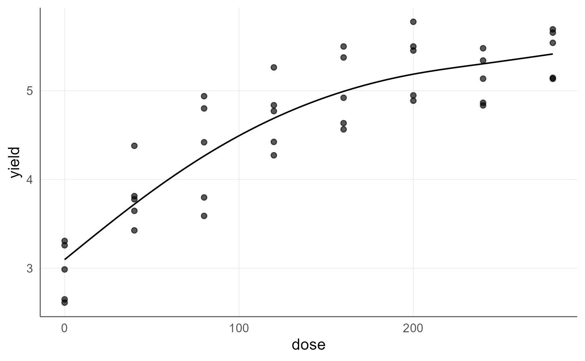
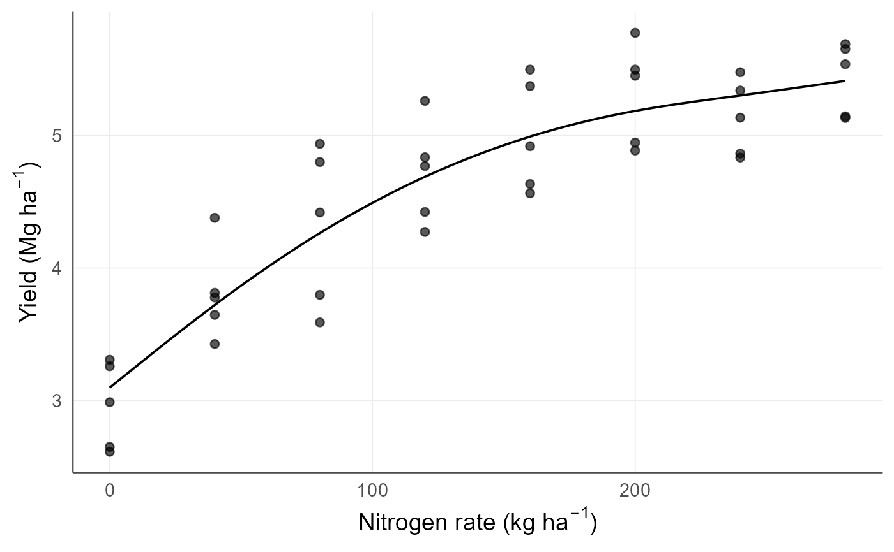

Journal-oriented graphics: theme and archival export
agri_graphics.Rdagri_theme() is the common ggplot2 theme of the package: no minor gridlines, drawn axis lines, readable base size and a compact legend. It is applied to the graphics of the regression module and can be added to any other agriRank figure. agri_save_figure() writes a figure in an archival format with the dimensions journals request.
Arguments
- base_size
Base font size in points for the theme.
- legend_position
Legend position for the theme.
- plot
A
ggplotobject, such as those returned byagri_np_plot,agri_np_forestoragri_plot.- file
Output path. The extension selects the format.
- layout
Preset width:
column(8.5 cm, one journal column),middle(11.4 cm) orfull(17.8 cm).customuseswidthalone.- width
Figure width in
units.- height
Figure height in
units; defaults to three quarters of the width.- units
Size units.
- dpi
Resolution for raster devices.
- ...
Additional arguments passed to
ggplot2::ggsave().
Details
Every agriRank figure is returned as an editable ggplot object, so the theme can always be replaced or extended with ordinary ggplot2 layers; nothing is baked into a raster.
For submission, the file extension selects the device: .tif/.tiff writes an LZW-compressed TIFF, the most frequently requested submission format; .pdf, .svg and .eps are vector formats that stay editable in Inkscape or Illustrator; .png and .jpg are intended for previews. Check the target journal's required dimensions and resolution before submission; the layout presets cover the usual one-column, middle and full-width sizes.
Examples
data(agri_dose)
f <- agri_np_regression(yield ~ dose, agri_dose, method = "smoothing_spline")
p <- agri_np_plot(f, type = "fit")
p

# Units belong in the axis labels; the figure stays fully editable:
p + ggplot2::labs(x = expression("Nitrogen rate (kg ha"^-1*")"),
y = expression("Yield (Mg ha"^-1*")"))

# Archival export at one-column width. For submission prefer TIFF or a
# vector format and the dimensions required by the journal.
file <- agri_save_figure(p, tempfile(fileext = ".png"), layout = "column")